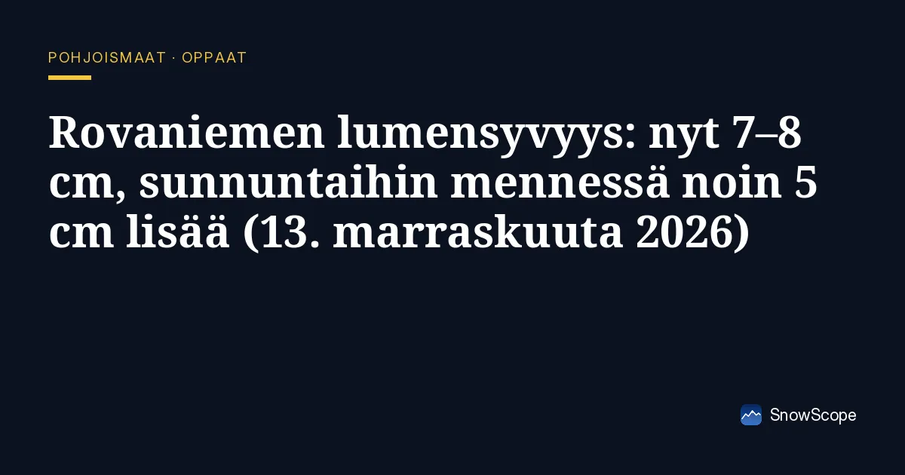

Rovaniemen lumensyvyys: nyt 7–8 cm, sunnuntaihin mennessä noin 5 cm lisää (13. marraskuuta 2026)
Rovaniemi heräsi talveen tällä viikolla. Mittaukset lentokentältä ja Apukasta näyttävät 7–8 cm jatkuvaa lumipeittoa—ei syvää, mutta tarpeeksi muuttamaan metsän väriä. Lumi saapui tiistaina ja on kasautunut tasaisesti. Tämän viikonlopun aikana tulee lisää noin 5 cm, kun kylmä kausi saapuu.
Katso kohteen Rovaniemi lumiennuste reaaliajassa SnowScope-sovelluksessaLumensyvyys, puuterihälytykset ja 3D-kartta, ilmaiseksi.
Kuinka se saapui
Maanantaina 10. marraskuuta sekä lentokentän asemalla että Apukasta 15 km itään oli paljas maa. Torstaihin mennessä molemmissa paikoissa oli 5–6 cm lunta. Perjantain aamulla lentokentällä oli 7 cm ja Apukasta 8 cm. Vauhti oli hidas ja tasainen—noin 1–2 cm päivässä—mikä tarkoitti sitä, että ei ollut äkillisiä sulantoja eikä paljaiden ja valkoisten alueiden kirjava kuva. Alue on pysynyt valkoisena.
Laajemmin katsottaessa Ylitornion Meltosjärven asema mittasi 6 cm samana aamuna. Tämä johdonmukaisuus Rovaniemen alueella on rauhoittava kaikille, jotka suunnittelevat aikaa metsässä tai järvillä: et löydä paljaata jäätä yhdestä paikasta ja syvää lunta toisesta.

Ohut marraskuun puolivälissä, mutta ei poikkeuksellinen
Numeroiden perusteella Rovaniemi on kevyt tähän ajankohtaan nähden. Viimeisten 46 talven mittaukset osoittavat, että 13. marraskuuta on yleensä valkoista täällä: 46 talvesta 40 oli luminen. Tyypillinen syvyys tähän päivämäärään mennessä on 9 cm, ohuista talvista noin 4 cm ja syvistä jopa 16 cm. Tämän vuoden 7–8 cm on tuon vaihteluvälin alalaidassa.
Viime talvi (2025–26) oli myös 8 cm tähän päivämäärään mennessä. Kaksi vuotta sitten 2023–24 oli paljon syvempi, 26 cm. Sitä ennen oleva vuosi oli ohut: vain 2 cm. Joten tämä on normaali vaihtelu, ei yllätys. Talvi alkoi myöhään—puolella menneistä talvista oli lunta 18. lokakuuta mennessä—mutta kun se saapui, se on pysynyt.
Mitä viikonlopun ennuste tarkoittaa
Lauantaina tulee noin 3 cm uutta lunta Rovaniemen alueelle. Lämpötilat vaihtelevat -8 °C:sta -3 °C:een, joten lumi ei tahdistu vaatteisiisi ja ilma on kuiva. Sunnuntaina tulee noin 2 cm lisää, viikonlopun kylmin hetki ennen auringonnousua: noin -12 °C. Maanantai tuo muutoksen: lämpötilat lähellä nollaa ja lumi todennäköisesti muuttuu märäksi. Yhdessä viikonlopun ennuste osoittaa noin 5 cm tuoretta lunta.
1. joulukuuta mennessä Rovaniemella on tyypillisesti 22 cm. Joulukuun puolivälissä 30 cm. Tammikuun puolivälissä noin 48 cm. Tässä tahdissa—lisäten 5 cm muutaman päivän välein—pohja pysyy kauden mukaisesti. Kauden alun lumi on kuitenkin ohut, ja se peittää kiveäksi verhoiltua maata, joten varovaisuus on paikallaan tuntemattomalla maastolla.
Mitä 7–8 cm tarkoittaa talviaktiviteeteille
Kävelylle ja valokuvaukselle tämä on täydellinen ajankohta. Metsän pohja on pehmeä, puut ovat painottuneet varhaiseen lumeen, ja lauantain kylmä, kuiva lumi tekee kulkemisesta nopeaa ja valon ihanteellista. Ota mukaasi otsalamppu: marraskuun puolivälissä päivänvalo kestää vain muutaman tunnin. Viikonlopun kylmyys tarkoittaa myös, että ei ole sohjoa—lumi pysyy rapean tuntuisena jalan alla.
Talvisille lajeille, jotka tarvitsevat pohjaa—kelkkailulle, koiravaljakkoajelulle, poronajoluille—8 cm on raja-arvo. Operaattorit voivat ajaa kevyitä valjakoita, mutta raskaammat kuormat ja epätasainen maasto takaavat kiviä. Jos varaat aktiviteettia, tarkista operaattoriltaan. Lumi sulattamattomilla järvillä ja soilla on piilovaara: vesi alla ei ole jäätynyt, ja lumisillalla voi sortua. Pysy merkityillä poluilla ja pois jäältä.
Alueellinen kuva
Rovaniemi on Rovaniemen alueen lumensyvyyden keskellä. Se ei ole syvintä—Ranualla, joka on etelään, oli vain 3 cm, kun taas joillakin korkealla tai pohjoisemmalla sijaitsevilla asemilla oli hieman enemmän. Mutta koko alue siirtyi valkoituneeksi yhdessä, ja koko alue pitäisi pysyä valkoisena koko talven ajan nyt kun lumipeite on asettautunut.
Tällaiset myöhäiset alkamiset eivät ole harvinaisia Suomen Lapissa. Tärkeää on, mitä tulee seuraavaksi. Tässä tahdissa Rovaniemella on kunnollinen pohja joulukuuhun mennessä ja normaali syvyys uuden vuoden tienoilla.
Vinkkejä laskijoille
- Lauantai ja sunnuntai ovat ihanteelliset talven ensimmäiselle metsäkävelylle: kuiva, kylmä lumi, päivänvalo noin klo 10–15 ja näkyvyys puiden väliin. Ota mukaasi otsalamppu marginaaleille ja termoosi.
- Järvet ja suot ovat sudenkuoppia alkutalvella. Lumi sulattamattomalla vedellä uppoaa, ja voit murtua läpi. Pysy merkityillä metsäpoluilla ja tutuilla reiteillä.
- Jos varaat talviaktiviteetteja—koiravaljakoajelu, poronajolu, moottorikelkkaielu—tarkista operaattoriltaan vähimmäislumensyvyys. Alle 10 cm kohdalla jotkin aktiviteetit ovat rajoitettuja.
- Kerrokset ja tuulenkestävä ulkokuori ovat tärkeämpiä kuin paljous: kuiva lumi -8 °C:ssa tuntuu kylmemmältä kuin märkä lumi -2 °C:ssa. Pohjoisista Jäämeren puolelta puhaltava tuuli on todelllinen.
- Alkujoulukuussa Rovaniemella pitäisi olla tarpeeksi lunta useimmille talviaktiviteeteille. Jos suunnittelet matkaa, marraskuun jälkimmäinen puoli on aika, jolloin alue siirtyy 'juuri valkoitunut' -tilasta 'valmis talvelle' -tilaan.
Näistä luvuista
Hiihtokeskusten lumensyvyydet ovat syvin lumi keskuksen ylärinteillä näytettynä päivänä; ne ovat arvioita alueelle, eivät mittaus yhdessä pisteessä. Ennusteet voivat muuttua. Lue aina virallinen lumivyöryennuste ennen rinteiden ulkopuolelle lähtöä.
Viittaa tähän raporttiin
Tutkimukseen, opetukseen tai mediaan: luvut ja kaaviot ovat vapaasti käytettävissä CC BY 4.0 -lisenssillä tällä lähdeviitteellä.
SnowScope (2026), Rovaniemen lumensyvyys: nyt 7–8 cm, sunnuntaihin mennessä noin 5 cm lisää (13. marraskuuta 2026), https://snowscope.app/blog/fi/2026/11/rovaniemi-snow-depth-13-november-2026.html, luettu 2026-11-13
SnowScope (Atlas Labs). (2026, November 13). Rovaniemen lumensyvyys: nyt 7–8 cm, sunnuntaihin mennessä noin 5 cm lisää (13. marraskuuta 2026). SnowScope snow reports. https://snowscope.app/blog/fi/2026/11/rovaniemi-snow-depth-13-november-2026.html
BibTeX
@misc{snowscope2026rovaniemisnowdepth13nove,
author = {{SnowScope (Atlas Labs)}},
title = {Rovaniemen lumensyvyys: nyt 7–8 cm, sunnuntaihin mennessä noin 5 cm lisää (13. marraskuuta 2026)},
year = {2026},
month = nov,
howpublished = {\url{https://snowscope.app/blog/fi/2026/11/rovaniemi-snow-depth-13-november-2026.html}},
note = {Published 2026-11-14 13:29 UTC; accessed 2026-11-13}
}· CC BY 4.0 · Menetelmät, data ja työkalut →
Seuraa: Rovaniemi
Ilmainen: viesti, kun uutta lunta on tulossa, ja ennuste joka aamu.